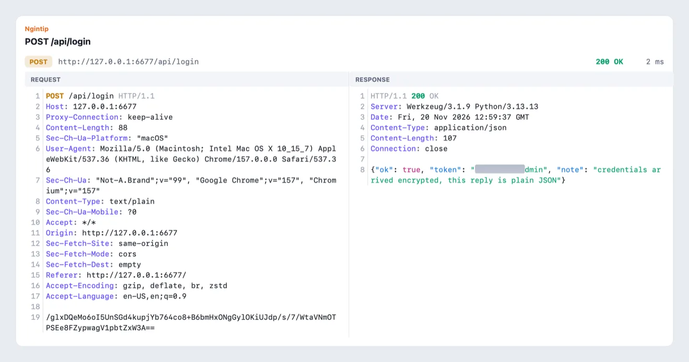

Repeater
Send it again, change one thing, send it again.
Tabs and groups
Send any flow from History to the Repeater and it opens as a tab. Tabs can be grouped, renamed and reordered, each keeps its own send history, and all of it is saved with the project, so closing the app does not cost you the request you were halfway through.
Bodies stay yours
The editor beautifies a JSON or markup body for reading by re-indenting the bytes you have, never by parsing and
re-serializing them. An escape such as \u0063, an escaped solidus, a duplicate key, a number spelled
1e3, or an integer past 253 leaves exactly as you typed it.
That matters because those are the payloads worth sending. A tool that quietly normalizes them is testing itself.
Capture image
Right-click a request or a response and take a capture image: a card with the method, URL, status and timing, the request and response side by side with line numbers and syntax colours, and secrets covered automatically. It is made for pasting into a report or a ticket.
